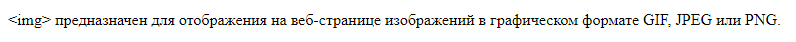

Теги
Тег <h>
С помощью тегов <h1>…<h6> в HTML представлены заголовки различных уровней: их всего шесть – от 1 до 6.
Тег <p>
<p> представляет собой абзац.
Тег <img>

Тег <br>
<br>
указывает
место
переноса
строки
в
тексте
HTML
страницы.
Тег <ul>
- <ul>
- устанавливает
- маркированный
- список.
Тег <ol>
- <ol>
- устанавливает
- нумерованный
- список.
Тег <i>
<i>Устанавливает курсивное начертание шрифта.
Тег <strong>
<strong> предназначен для акцентирования текста.
Тег <del>
<del> представляет диапазон текста, который был удалён из документа.
Тег <marquee>